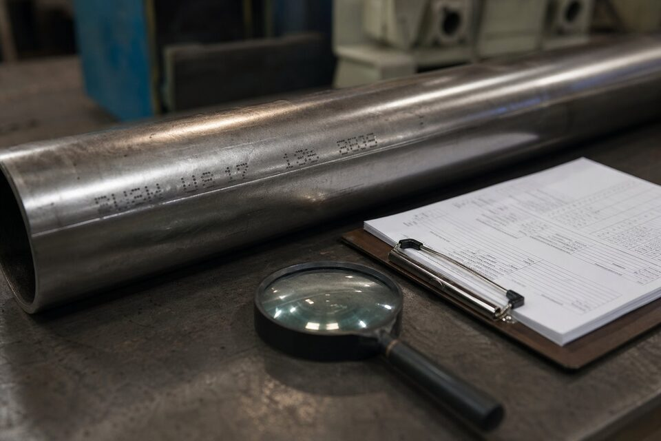

گواهی مواد چیست و چرا حیاتی است؟
گواهی مواد سندی است که نتایج آزمونهای شیمیایی و مکانیکی یک محصول فلزی را به همراه مشخصههای ذوب و سفارش ثبت میکند. این سند، تنها مدرک قابل اتکا برای اثبات انطباق متریال با استاندارد و مشخصه فنی است. بدون گواهی معتبر، هیچ بازرسی چشمی یا تستی نمیتواند هویت واقعی متریال را اثبات کند؛ به همین دلیل در پروژههای نفت، گاز و پتروشیمی، سطح گواهی در قرارداد خرید صریحاً تعیین میشود.

انواع گواهی در یک نگاه
| نوع | نام | صادرکننده | محتوا | اعتبار |
|---|---|---|---|---|
| ۲٫۱ | اعلامیه انطباق با سفارش | سازنده | فقط اعلام انطباق، بدون نتیجه تست | کمترین |
| ۲٫۲ | گزارش تست | سازنده | نتایج تست، نه لزوماً از همان محموله | محدود |
| ۳٫۱ | گواهی بازرسی کارخانهای | واحد بازرسی مستقل از تولید همان کارخانه | نتایج تست همان محموله با ردیابی ذوب | بالا |
| ۳٫۲ | گواهی بازرسی شخص ثالث | سازنده + نهاد بازرسی مستقل | نتایج تست با تأیید مستقل | بالاترین |
هرچه سطح گواهی بالاتر رود، استقلال صدور و قابلیت ردیابی بیشتر میشود.
کاربرد هر سطح در پروژهها
- اعلامیه انطباق: کالای عمومی بدون الزام ایمنی؛ مناسب قطعات غیربحرانی.
- گزارش تست: وقتی نتایج میانگین یک خانواده محصول کافی است؛ برای تجهیزات تحت فشار توصیه نمیشود.
- گواهی کارخانهای: استاندارد رایج مواد پایپینگ؛ نتایج همان محموله با ردیابی کامل ذوب.
- گواهی شخص ثالث: تجهیزات تحت فشار، سرویس ترش، خطوط اصلی انتقال و هر جا مدارک پروژه الزام کرده باشد.
راستیآزمایی گواهی مواد
- تطابق شماره ذوب حکشده روی قطعه با شماره ذوب درجشده در گواهی.
- کنترل صحت مرجع استاندارد و گرید درجشده با سفارش.
- بررسی مقادیر شیمیایی و مکانیکی نسبت به حداقلهای استاندارد مربوطه.
- کنترل امضا و هویت واحد بازرسی یا نهاد شخص ثالث.
- در صورت تردید، انجام تست شناسایی مثبت متریال برای تأیید ترکیب شیمیایی.
درج الزامات گواهی در قرارداد
- سطح گواهی (کارخانهای یا شخص ثالث) را در سفارش خرید صریح کنید.
- الزام حک شماره ذوب روی قطعه را قید کنید.
- تعداد نسخه و فرمت تحویل (کاغذی یا دیجیتال) را مشخص کنید.
- در سرویس ترش، الزامات تکمیلی سختی و تستهای ویژه را اضافه کنید.
- حق بازرسی شخص ثالث در محل سازنده را محفوظ نگه دارید.
مغایرتها و اشتباههای رایج در گواهیها
تجربه بازرسیهای ورودی نشان میدهد بخش قابل توجهی از مشکلات گواهی مواد، نه جعل، بلکه اشتباهها و ناهماهنگیهای سادهای هستند که اگر کنترل نشوند، دردسرساز میشوند. شایعترین مغایرت، عدم تطابق مشخصه ذوب مندرج در گواهی با استامپ روی کالا است؛ این اختلاف ممکن است از جابهجایی مدارک در انبار فروشنده یا اشتباه در نشانهگذاری ناشی شود و باید قبل از نصب پیگیری گردد. مغایرت دوم، اختلاف بین نتایج آزمون گزارششده و حدود استاندارد مرجع است؛ گاهی عددی که در گواهی درج شده، خارج از محدوده مجاز استاندارد اعلامشده است و این موضوع باید به عنوان عدم انطباق ثبت و با سازنده رفع شود. سوم، گواهیهایی که برای کالای دیگری صادر شدهاند یا تاریخ آنها با زمان ساخت همخوانی ندارد. چهارم، ناقص بودن آزمونهای گزارششده نسبت به الزامات سفارش است؛ برای مثال سفارش تست ضربه در دمای خاص را داشته اما گواهی فقط تست کشش را شامل میشود. رویه حرفهای این است که در بازرسی ورودی، گواهی با کالا و با الزامات سفارش تطبیق و نتیجه در فرم کنترل مدارک ثبت شود؛ هر مغایرت باید به صورت رسمی به فروشنده ابلاغ و تعیین تکلیف گردد، نه اینکه با فرض بیاهمیت بودن نادیده گرفته شود.
در پروژههایی که مدارک به صورت دیجیتال مدیریت میشوند، پیوند بین گواهی و شماره یکتای کالا را در سیستم ثبت کنید تا در بازرسیهای آینده، بازیابی سند برای هر قلم در چند ثانیه ممکن باشد و از گم شدن مدارک کاغذی جلوگیری شود.
جمعبندی
گواهی مواد، شناسنامه متریال است؛ انتخاب سطح مناسب آن در قرارداد و راستیآزمایی دقیق در زمان تحویل، از ورود متریال نامنطبق به پروژه جلوگیری میکند.
سوالات رایج
تفاوت گواهی بازرسی کارخانهای و گواهی بازرسی شخص ثالث چیست؟
گواهی کارخانهای توسط واحد بازرسی مستقل از تولید همان کارخانه صادر میشود؛ گواهی شخص ثالث علاوه بر کارخانه، توسط یک نهاد بازرسی مستقل نیز تأیید میشود و بالاترین اعتبار را دارد. برای تجهیزات تحت فشار و سرویسهای حساس معمولاً گواهی شخص ثالث الزامی است.
چرا شماره ذوب اهمیت دارد؟
شماره ذوب شناسه یکتای ذوب فولاد است و تمام نتایج آزمون شیمیایی و مکانیکی به آن گره خورده است. تطابق شماره حکشده روی قطعه با گواهی مواد، تنها راه راستیآزمایی هویت متریال است.
آیا گزارش تست بدون مشخصه کافی است؟
برای کالای عمومی ممکن است کافی باشد، اما برای تجهیزات تحت فشار و سرویسهای حساس خیر؛ زیرا نتایج به ذوب خاصی مربوط نیست و قابلیت ردیابی ندارد. سطح گواهی باید در قرارداد مشخص شود.
در پروژههای داخلی چه سطحی رایج است؟
برای مواد پایپینگ معمولاً گواهی بازرسی کارخانهای درخواست میشود؛ برای تجهیزات تحت فشار، سرویس ترش و خطوط حساس، گواهی شخص ثالث رایج و گاهی الزامی است. مرجع نهایی، مدارک پروژه و وندورلیست است.
مطالب مرتبط
- راهنمای تأیید صلاحیت تأمینکننده
- راهنمای تست شناسایی مثبت متریال
- راهنمای تضمین کیفیت در تامین تجهیزات صنعتی
- راهنمای وندورلیست پروژههای نفتی
- فولاد فورج کربنی؛ مشخصات و نکات خرید
در استعلام خود سطح گواهی مواد مورد نیاز (کارخانهای یا شخص ثالث) را مشخص کنید تا مدارک متناسب با الزامات پروژه ارائه شود. برای سرویس ترش و تجهیزات تحت فشار، الزامات تکمیلی را ذکر کنید.
مشاهده صفحه محصول ← ثبت RFQ همین محصولتامین این تجهیزات را به پیشرو تجهیز فرتاک بسپارید
شرکت پیشرو تجهیز فرتاک تامینکننده تخصصی تجهیزات صنعتی برای پروژههای نفت، گاز، پتروشیمی، فولاد و نیروگاهی است. برای دریافت پیشنهاد فنی و قیمت، استعلام (RFQ) خود را ثبت کنید تا کارشناسان مهندسی فروش در کوتاهترین زمان پاسخ دهند.
- تامین با گواهی موادتامینکننده تجهیزات با مدارک بازرسی کامل
- بازرسی و کنترل کیفیتهماهنگی بازرسی شخص ثالث در صورت الزام قرارداد